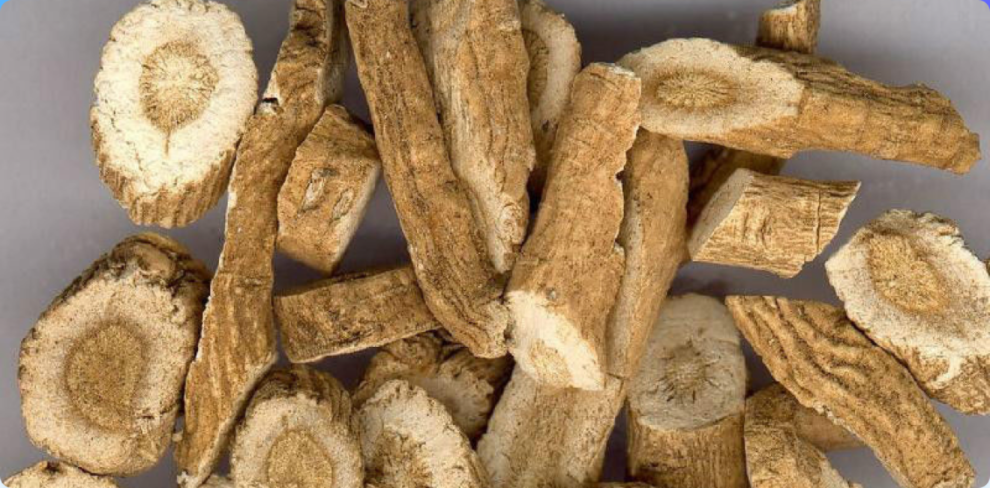

板蓝根
板蓝根

药品简介
板蓝根，中药名。常用别名：靛青根、蓝靛根、大青根，是一种中药材。
苦，寒。具有清热解毒，凉血利咽之功效。
常用于温疫时毒，发热咽痛，温毒发斑，痄腮，烂喉丹痧，大头瘟疫，丹毒，痈肿。
入药部位
十字花科植物菘蓝的干燥根。
性味
苦，寒。
功效
清热解毒，凉血，利咽。
主治
温疫时毒，发热咽痛，温毒发斑，痄腮，烂喉丹痧，大头瘟疫，丹毒，痈肿。
相关配伍
1、与玄参、马勃、牛蒡子等同用，可用于风热上攻，咽喉肿痛等症。
2、与生地、紫草、黄芩等同用，可用于时行温病，温毒发斑等症。
2、与生地、紫草、黄芩等同用，可用于时行温病，温毒发斑等症。
用法用量
煎服，9-15g。
禁忌
体虚而无实火热毒者忌服，脾胃虚寒者慎用。
炮制方法
1、除去杂质，洗净，润透，切厚片，干燥。
2、本品呈圆形的厚片。外表皮淡灰黄色至淡棕黄色，有纵皱纹。切面皮部黄白色，木部黄色。气微，味微甜后苦涩。
2、本品呈圆形的厚片。外表皮淡灰黄色至淡棕黄色，有纵皱纹。切面皮部黄白色，木部黄色。气微，味微甜后苦涩。
生理特性
菘蓝，二年生草本，植株高50-2500px。光滑被粉霜。根肥厚，近圆锥形，直径2-75px，长20-750px，表面土黄色，具短横纹及少数须根。基生叶莲座状，叶片长圆形至宽倒披针形，长5-375px，宽1.5-100px，先端钝尖，边缘全缘，或稍具浅波齿，有圆形叶耳或不明显；茎顶部叶宽条形全缘，无柄。总状花序顶生或腋生，在枝顶组成圆锥状；萼片4，宽卵形或宽披针形，长2-3mm；花瓣4，黄色，宽楔形，长3-4mm，先端近平截边缘全缘，基部具不明显短爪；雄蕊6，4长2短，长雄蕊长3-3.2mm，短雄蕊长2-2.2mm；雌蕊1，子房近圆柱形，花柱界限不明显，柱头平截。短角果近长圆形，扁平，无毛，边缘具膜质翅，尤以两端的翅较宽，果瓣具中脉种子1颗，长圆形，淡褐色。花期4-5月，果期5-6月。喜湿暖环境，耐寒怕涝，宜选排水良好、疏松肥沃的砂质壤土。生于山地林缘较潮湿的地方。
产地
主产于河北、江苏、安徽、河南亦产。
相关论述
《本草便读》：“板蓝根即靛青根，其功用性味与靛青叶同，能入肝胃血分，不过清热、解毒、辟疫、杀虫四者而已。但叶主散，根主降，此又同中之异耳。”